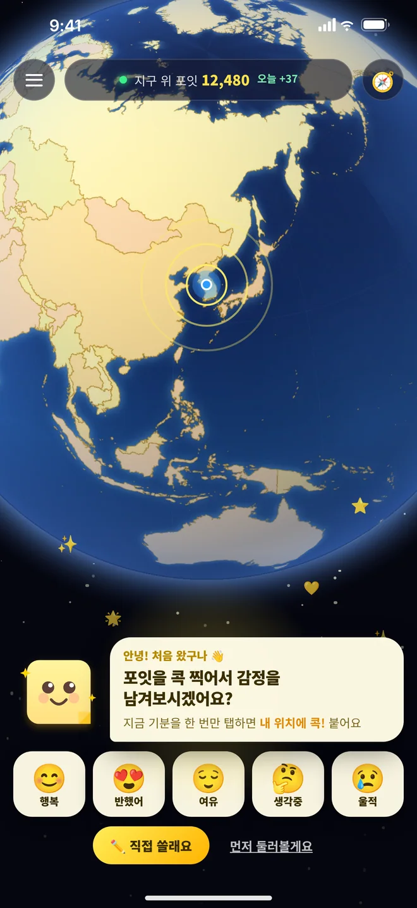
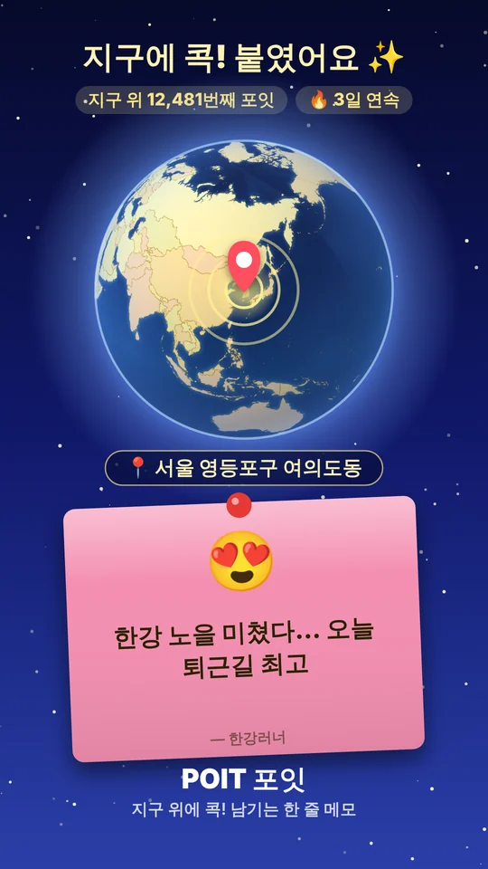
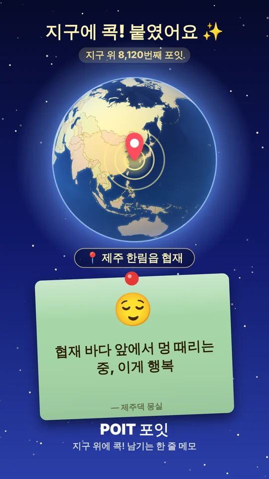
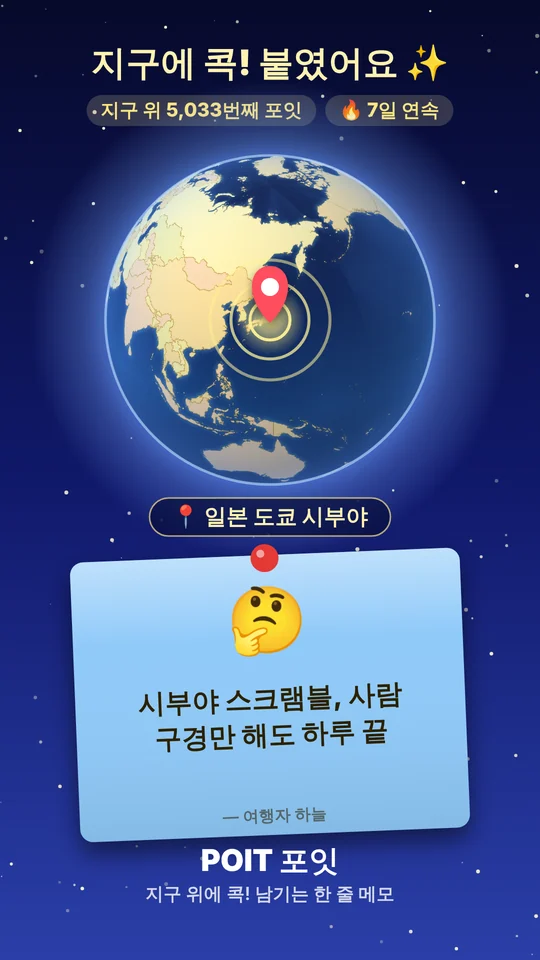
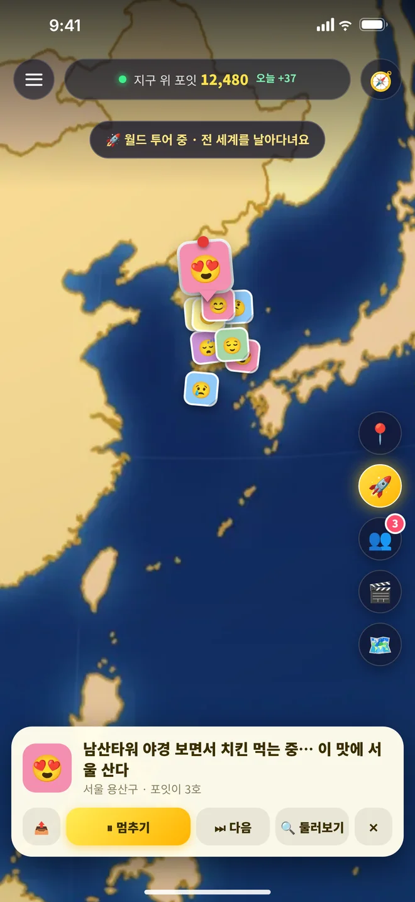
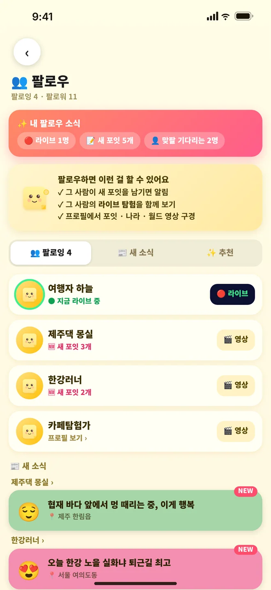
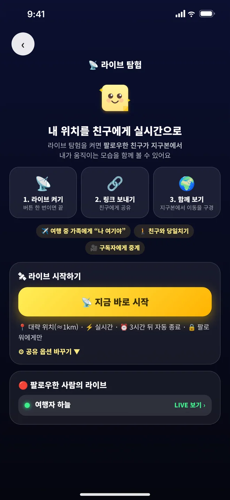

📍 감정 지구본, 포잇
지구 위에
지구 위에
내 마음을 콕!
오늘의 기분을 포스트잇 한 장에 적어 지구본 위에 콕 붙여요. 세계 곳곳에 붙은 낯선 사람들의 마음도 구경해 보세요.
로그인 없이 구경5초면 작성무료

오늘의 기분을 포스트잇 한 장에 적어 지구본 위에 콕 붙여요. 세계 곳곳에 붙은 낯선 사람들의 마음도 구경해 보세요.
예시 문구입니다. 실제 이용자 글이 아니에요.
가입도, 긴 글도 필요 없어요. 앱을 열고 지구본을 콕!
손가락으로 돌리고 확대하면 세계 곳곳에 붙은 포잇이 보여요. 로그인 없이도 구경할 수 있어요.
가고 싶은 곳이나 지금 있는 곳을 콕. 한두 줄, 오늘의 기분 색을 골라요.
포잇과 지구본 위치가 담긴 이미지를 메시지와 함께 공유하면, 링크를 눌러 바로 그 포잇으로 열려요.
도시도 골목도 바다 위도, 지구본 어디에나 포스트잇을 붙일 수 있어요. 감정마다 색이 달라서 지구본이 알록달록 물들어요.
처음 열면 포잇 마스코트가 나타나 “포잇을 콕 찍어서 감정을 남겨보시겠어요?” 하고 물어봐요. 따라가기만 하면 첫 포잇이 완성돼요.

포잇과 지구본 속 그 장소가 한 장의 이미지로 만들어져요. 메시지와 함께 보내면, 받은 사람이 링크를 눌러 앱에서 바로 그 포잇을 열 수 있어요.



내가 남긴 포잇들을 따라 지구본이 부드럽게 날아가요. 도착할 때마다 그 포잇이 또렷하게 떠올라요.

팔로우한 친구의 포잇을 지구본에서 모아 보고, 친구가 허락하고 직접 켠 동안에는 지금 있는 곳도 볼 수 있어요. 여행 중인 친구와 함께 떠나는 기분이에요.

내가 남긴 포잇이 몇 개든 같은 간격으로 천천히, 한 편의 영상처럼 이어져요. 하이라이트를 보고 공유해 보세요.

옆으로 넘겨 보세요.

앱 화면을 바탕으로 만든 안내용 이미지이며 실제 기기 화면과 조금 다를 수 있어요.
감정마다 포스트잇 색이 달라서, 지구본이 마음의 지도가 돼요.
거창하지 않아도 괜찮아요. 순간이 쌓이면 지도가 돼요.
다녀온 곳마다 그날의 기분을 한 줄로. 나중에 월드 투어로 다시 날아가 봐요.
같이 걸은 길 위에 포잇을 붙여 이미지로 보내 보세요. 링크를 누르면 바로 그 자리로 열려요.
비공개로 남기면 나만 볼 수 있어요. 말하기 어려운 마음도 지구 한 켠에 살짝.
안전하게 쓸 수 있도록 만들었어요.
네. 내려받기와 모든 기능이 무료입니다. 대신 광고가 표시될 수 있어요.
공개된 포잇은 로그인 없이 구경할 수 있어요. 포잇을 남기거나 팔로우·라이브 공유를 하려면 로그인이 필요합니다. 친구가 보낸 공유 링크도 로그인 없이 열려요.
위치 권한은 내가 허용했을 때만 쓰고, 공개한 포잇만 그 위치와 함께 보여요. 익명·비공개로 남길 수도 있어요. 실시간 위치(라이브 탐험)는 내가 직접 시작했을 때만, 팔로워에게만, 기본 ‘대략적인 위치’로 보이고 언제든 끌 수 있어요.
내가 켠 동안만 팔로워에게 지금 있는 곳이 지구본 위에 보이는 기능이에요. 여행·산책·약속 장소 찾기에 좋아요. 켜지 않으면 아무것도 공유되지 않아요.
포잇마다 신고·차단 버튼이 있어요. 신고하거나 차단하면 내 화면에서 바로 사라지고, 운영자가 확인해 조치합니다.
앱 안 설정에서 바로 탈퇴할 수 있고, 계정과 작성한 모든 포잇이 영구 삭제돼요.
iPhone(App Store), Android(Google Play), 토스 앱 안의 미니앱으로 만나볼 수 있어요.